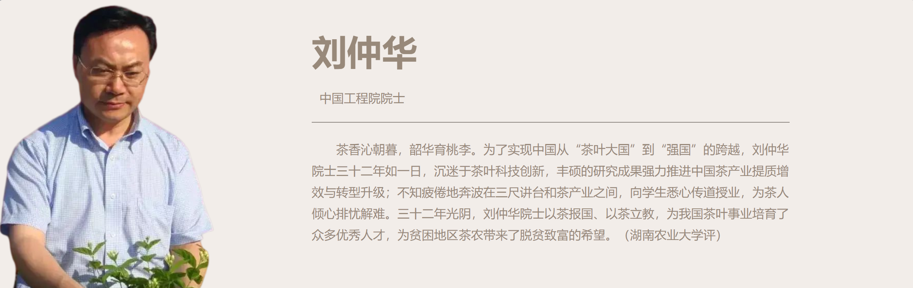

茶养

Tempor erat elitr rebum at clita. Diam dolor diam ipsum sit. Aliqu diam amet diam et eos. Clita erat ipsum et lorem et sit
Tempor erat elitr rebum at clita. Diam dolor diam ipsum sit. Aliqu diam amet diam et eos. Clita erat ipsum et lorem et sit

留言板